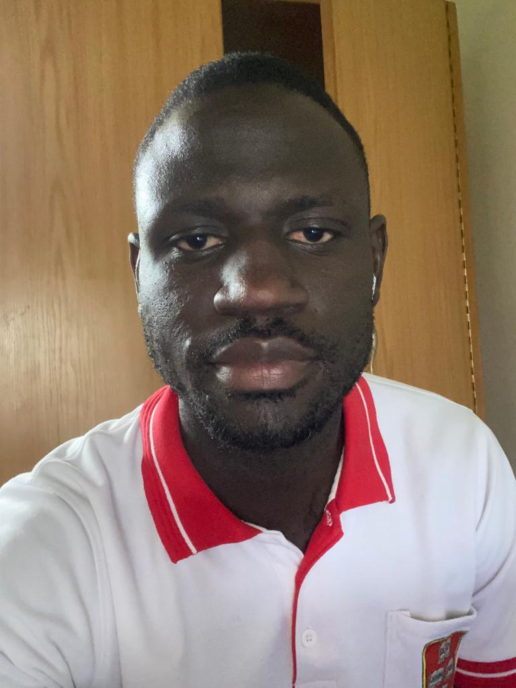

Summary
To improve my skills as a web developer.
Education
- Kyambogo Univerity
- Bachelor's Degree in Information Technology & Computing (2010-2016)
- Bishop Angelo Negri College
- Uganda Advanced Certificate of Education (2008-2009)
- St. Joseph's College Layibi
- Uganda Certificate of EDucation (2004-2007)
- Chadwick Namate Primary School
- Primary Leaving Education (1997-2003)
Work experience
- St. John Paul II College Gulu (2019-2023)
Job Title
- ICT Officer
- Responsibilities
- Manage all ICT equipment in the college
- Repair and maintenance of ICT equipment in the college
- Manage Internet in the College
- Manage the college website and social media platforms
- Provide end-user support for teachers and students
- Train teachers on use of ICT
- Develop ICT strategies
- Write monthly reports
- MTN Uganda (2015-2019)
Job Title
- Subscriber verification officer
- Responsibilities
- Verify documents of new subscribers
- Call agents to send clear documents of subscribers
- Call subscribers to go to the nearest service center
and capture their clear documents
- Write monthly reports
- Electoral Commission (2013-2014)
Job Title
- Enrolment officer
- Responsibilities
- Enrol citizens in the system
- Issue ID cards
Skills
- Coding in HTML, very soon CSS and Javascript
- Computer software, troubleshooting
- Graphics design, adobe photoshop, adobe illustrator, adobe indesign
- Video editing, adobe premiere pro
Awards
- Certificates of appreciation, four years in a row, from 2019-2023

Hobbies
Contact